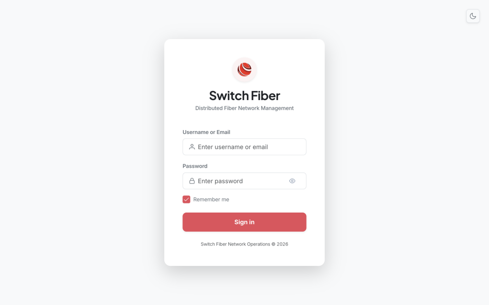

Problem Solver • Operations
SwitchFiber Admin — Network Management
Internal operations console built for Switch Fiber Network Operations, bringing subscriber records, service plans, technician job orders, and fiber infrastructure tracking into one organized system.
4 Core Modules
Subscribers, Plans, Job Orders, Fiber
Vue 3 • PrimeVue
Operations SPA Console